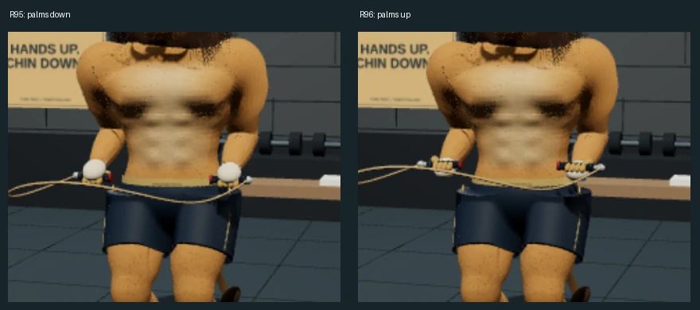
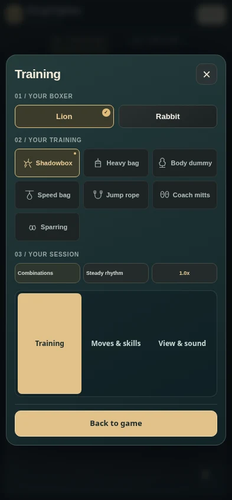
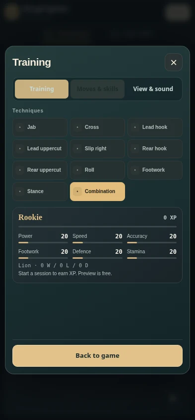
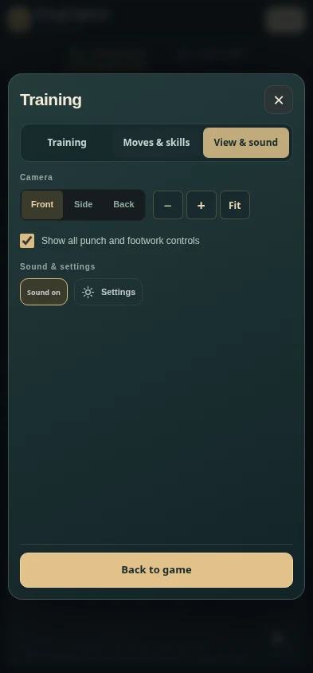
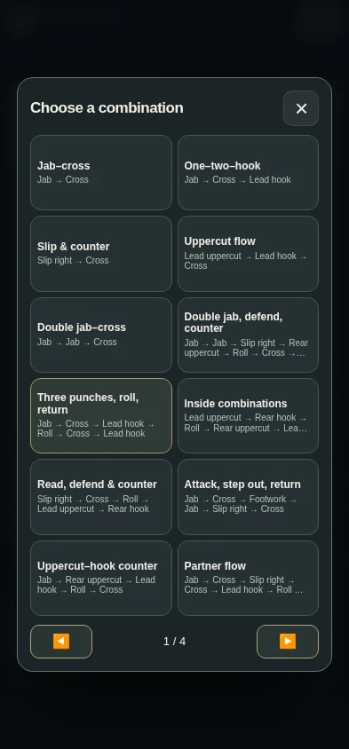
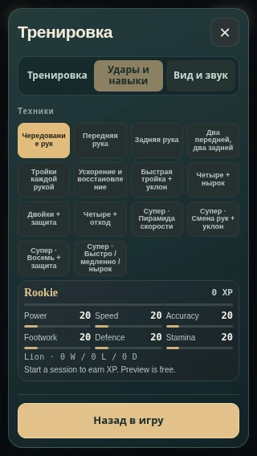
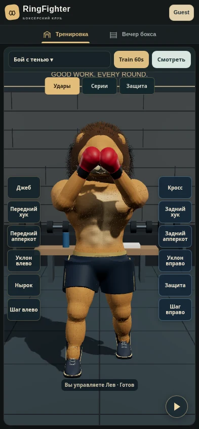
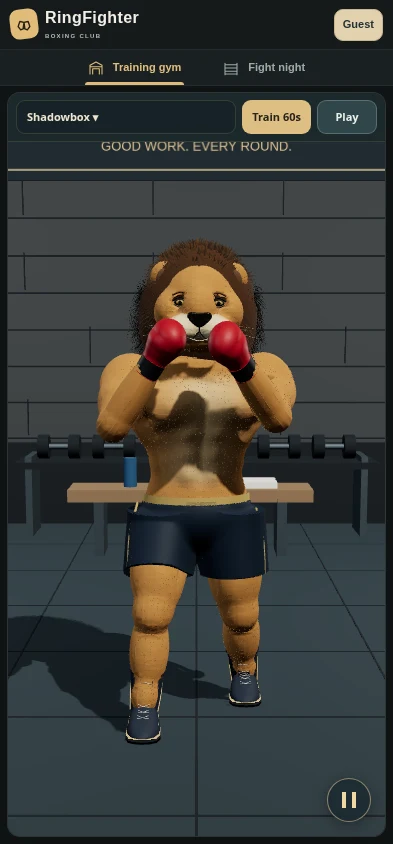
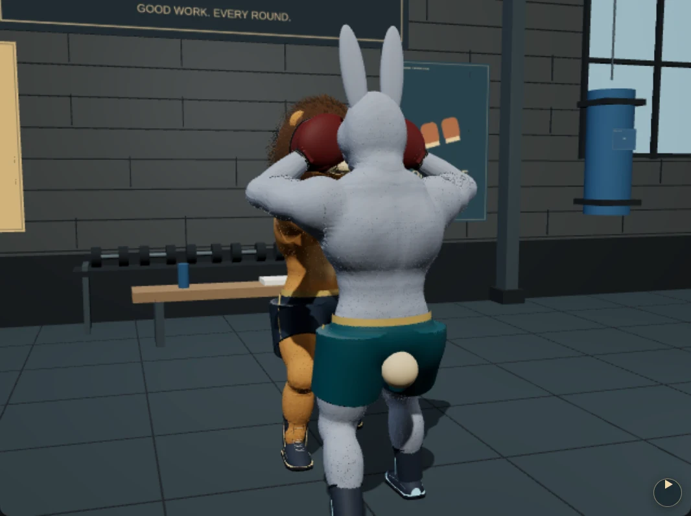
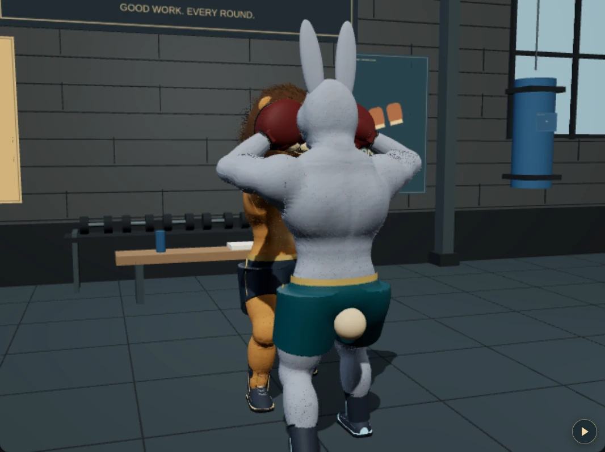

Actual Chromium app screenshots. R95 baseline versus R96 fixed cameras/poses. These are rendered game assets, not generated concept art. Phone viewport checks do not establish physical-phone FPS.
Implementation report · Exact source validation · Open app










Raw evidence: menus, 48 manual layouts, pause, rope segments, lion triangles, rabbit triangles, bag impacts, render costs.